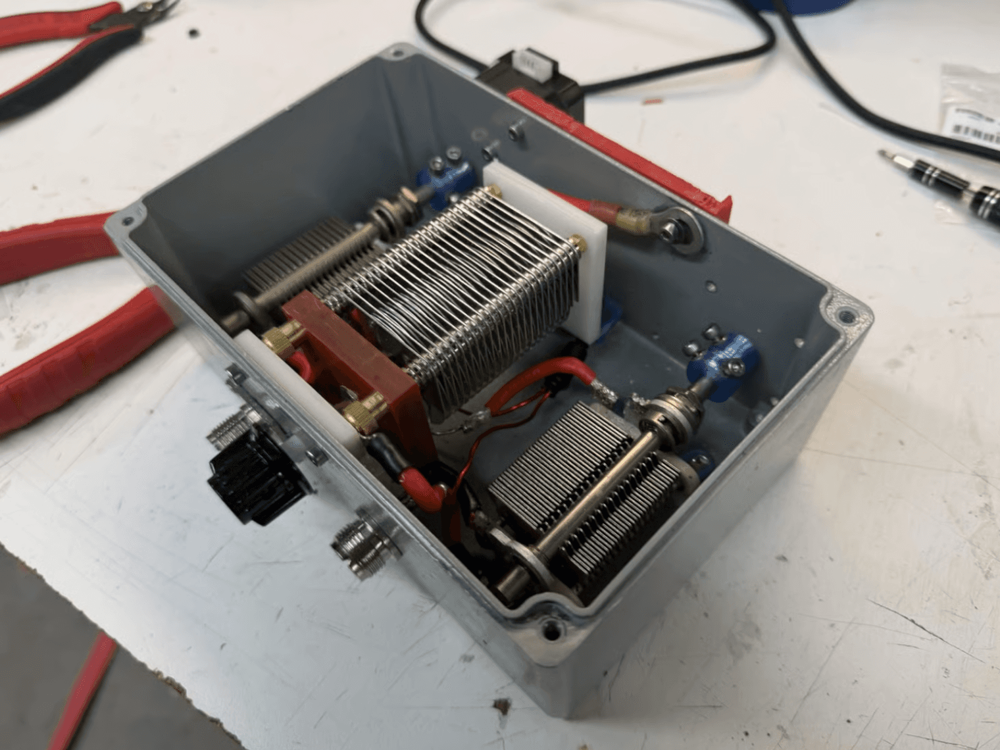

A precision automation tool designed to replace manual tuning in dynamic RF sputtering environments.
~1.2 VSWR95W forward power$636 build
Overview
The CMU Hacker Fab develops low-cost, open-source alternatives to democratize nanofabrication and replace expensive semiconductor manufacturing equipment. One of its core tools is a DIY RF sputtering chamber, where plasma conditions make the chamber impedance shift throughout a deposition run.
Traditionally, an operator keeps tuning variable capacitors by hand to reduce reflected power, measured as VSWR (Voltage Standing Wave Ratio). Commercial automated matching networks typically cost $3,000–$8,000+, making them a poor fit for a student-run fab. This project built a custom automated RF matching network to remove that manual tuning step at a much lower cost.

System Overview
The matcher replaces manual knob-turning with high-precision digital control. A Teensy 4.1 and custom T-network read forward and reverse power signals from the RF line, then drive 0.9° stepper motors at 1/64 microstepping connected to air-variable capacitors.
A closed-loop controller searches capacitor positions in real time so the chamber stays matched as plasma conditions drift, without an operator on the knobs.
Actuation
0.9° NEMA 17 steppers at 1/64 microstepping
Network
T-network with 500 V air-variable caps and a custom ~2 µH coil (6 turns, 16 AWG)
Match speed
~5 s from cold startup to lock
Sensing noise
±0.001 VSWR after buffering and supersampling
Closed-loop VSWR tuning demo
PCB Design
I designed a custom two-layer PCB around the Teensy 4.1, motor drivers, and active cooling. The board needed careful shielding and grounding to suppress RF interference in the feedback loop, keeping the microcontroller and drivers reliable in a high-noise environment.
To measure VSWR, I reverse-engineered a COTS Surecom SW-112 VSWR meter and tapped into its internal toroidal sensing lines, then built an analog sensing path into the Teensy’s ADCs around it.
Source
Reverse-engineered Surecom SW-112 toroidal sense lines
Buffering
TLV2462CP op-amps isolate the Teensy ADC inputs
Line impedance
~1 MΩ high-impedance path, preserved to avoid loading the sense lines
Why it matters
Prevents voltage sag that would otherwise alter RF behavior mid-measurement
Firmware
The firmware processes digitized forward and reverse power, runs the coordinate descent matcher, and drives the actuators in real time. I also built a local interface with an I2C OLED and rotary encoder so operators can switch between automated and manual tuning while monitoring VSWR and power telemetry.
Control Algorithm
Each iteration, the firmware probes one motor axis at a time: it takes a small step, measures the change in cost, and uses the ratio as an approximate gradient to scale the next step.
Measurement / cost
VSWR=Vfwd + VrevVfwd − Vrev
J=(VSWR − 1)2
V is the mean of N = 300 ADC samples, supersampled to suppress 13.56 MHz switching noise.
Finite-difference step
g=ΔJΔθ≈−∇J
Δθcmd=α · g(α = 0.025)
Step clamp
Δθ∈[π700,π36]
Lower bound escapes the noise floor; upper bound keeps the small-step approximation valid.
Coordinate descent over the VSWR bowl
Results
On a sustained argon deposition run, the matcher held lock until the plasma extinguished from pump brownout or debris, not matcher drift. The design is open-source for other Hacker Fabs to replicate.